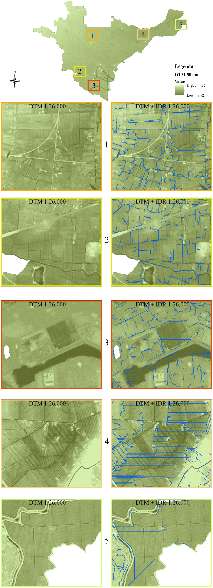

Channel network extraction from DEM for the Municipal Water Plan: a case study in Venice
The thesis begins with an introduction to the relationship between climate change and the freshwater system, and continues with the description of water management at all levels, starting from international events and European directives, to italians national and local actors and instruments. The second part introduces the problem of digital cartographic acquisition of the hydrographic network required by the Municipal Water Plan and applies two different hydrographic extraction methods from DTM for the Municipality of Venice mainland. After an introduction on the water management system in the study area and a general description of the digital terrain modelling, the thesis continues with the first hydrographic extraction methodology applied through ArcGIS software’s hydrology tool and the second methodology, realized through the open source software WhiteboxGAT and with ArcGIS. The final part of the paper is completed with a structured comparison analysis between the two methodologies used.
Water management system
Flow-based method with ArcGIS
Terrain model used
Workflow
Filling the terrain model
Extracted vector channel netwok
Municipal vector channel netwok
Morphological method with WhiteboxGAT and ArcGIS
Terrain model used
Workflow
Channel area individuation
MGD parametrization
Channel area vectorialization
Channel network filtering
Extracted vector channel netwok
Municipal vector channel netwok